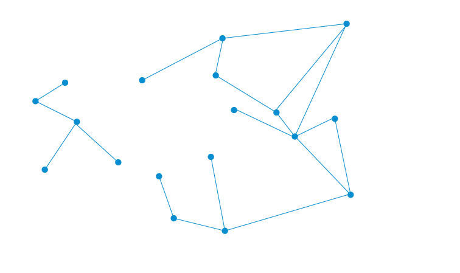

Frente a nuestros ojos se despliega una revolución tecnológica equiparable a la Revolución Industrial.

La demanda total de energía crece velozmente. Para 2040, se espera que sea un 50% más alta que hoy.
Y en tanto, en la Argentina atravesamos un proceso de transición conocido como bono demográfico. Tenemos, por pocos años, mayor porcentaje de personas en edad de trabajar que dependientes.
Estas tendencias nos presentan desafíos y oportunidades
Argentina 2030 es un lugar donde pensar cómo aprovechar las oportunidades y enfrentar los desafíos. Un ámbito plural y multidisciplinario para pensar el futuro.
Debatamos y generemos juntos las políticas para transitar exitosamente el camino hacia 2030.